감정평가사-1차-1교시 (2017-03-04 기출문제)
1과목: 민법(총칙,물권)
1. 법원(法源)에 관한 설명으로 옳지 않은 것은? (다툼이 있으면 판례에 따름)
- 사회생활규범이 관습법으로 승인되었다면 그것을 적용하여야 할 시점에서의 전체 법질서에 부합하지 않아도, 그 관습법은 법적 규범으로서의 효력이 인정된다.
- 법원은 관습법의 존부를 알 수 없는 경우를 제외하고 당사자의 주장ㆍ증명이 없어도 관습법을 직권으로 확정하여야 한다.
- 관습법은 법령과 같은 효력을 가지는 것으로서 법령에 저촉되지 않는 한 법칙으로서의 효력이 있다.
- 물권은 법률 또는 관습법에 의하는 외에는 임의로 창설하지 못한다.
- 강행규정 자체에 결함이 있거나 강행규정 자체가 관습에 따르도록 위임한 경우에는 사실인 관습에 법적 효력을 부여할 수 있다.
(정답률: 알수없음)

2. 능력에 관한 설명으로 옳은 것은? (다툼이 있으면 판례에 따름)
- 2인 이상이 동일한 위난으로 사망한 경우에는 동시에 사망한 것으로 본다.
- 태아는 불법행위로 인한 손해배상청구권에 관하여 이미 출생한 것으로 추정한다.
- 태아는 그 법정대리인에 의하여 수증행위를 할 수 있다.
- 제한능력을 이유로 법률행위를 취소한 경우, 제한능력자는 선의ㆍ악의를 묻지 아니하고 그 행위로 인하여 받은 이익이 현존하는 한도에서 상환할 책임이 있다.
- 계약자유의 원칙상 제한능력자를 보호하는 규정에 반하는 매매계약도 유효하다.
(정답률: 알수없음)
3. 제한능력자에 관한 설명으로 옳은 것만을 모두 고른 것은? (다툼이 있으면 판례에 따름)
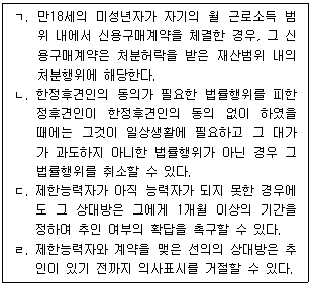
- ㄱ, ㄴ
- ㄱ, ㄷ
- ㄴ, ㄷ
- ㄴ, ㄹ
- ㄷ, ㄹ
(정답률: 알수없음)
4. 부재와 실종에 관한 설명으로 옳지 않은 것은? (다툼이 있으면 판례에 따름)
- 부재자는 성질상 자연인에 한한다.
- 법원은 선임한 재산관리인에 대하여 부재자의 재산으로 상당한 보수를 지급할 수 있다.
- 외국에 장기 체류하는 자가 국내에 있는 재산을 관리하고 있으면 그는 부재자에 해당하지 않는다.
- 부재자에 대한 실종선고 이전에 법원이 선임한 부재자의 재산관리인이 선임결정취소 전에 한 처분행위에 기하여 경료된 등기는 적법한 것으로 추정된다.
- 피상속인의 사망 후에 그의 아들에 대한 실종선고가 있었으나 피상속인의 사망이전에 실종기간이 만료된 경우, 그 아들은 상속인이 될 수 있다.
(정답률: 알수없음)
5. 민법상 법인에 관한 설명으로 옳지 않은 것은? (다툼이 있으면 판례에 따름)
- 사단법인의 정관에 다른 규정이 없는 한, 그 정관은 총사원 3분의 2 이상의 동의가 있는 때에 한하여 이를 변경할 수 있다.
- 법인은 법률의 규정에 의함이 아니면 성립하지 못한다.
- 법인의 목적 범위 외의 행위로 인하여 타인에게 손해를 가한 때에는 그 사항의 의결에 찬성하거나 그 의결을 집행한 사원, 이사 및 기타 대표자가 연대하여 배상하여야 한다.
- 사단법인의 사원의 지위는 양도 또는 상속할 수 없고, 이는 정관으로 달리 정할 수 없다.
- 이사가 수인(數人)인 경우에 법인의 사무집행은 정관에 다른 규정이 없는 한 이사의 과반수로써 결정한다.
(정답률: 알수없음)
6. 비법인사단에 관한 설명으로 옳지 않은 것은? (다툼이 있으면 판례에 따름)
- 사단법인의 하부조직이라도 스스로 단체로서의 실체를 갖추고 독자적인 활동을 하고 있다면 그 사단법인과는 별개의 독립된 비법인사단으로 볼 수 있다.
- 정관 기타 규약에 다른 정함이 없는 한, 사원총회의 결의를 거치지 않은 총유물의 관리행위는 무효이다.
- 비법인사단의 대표자의 행위가 외관상ㆍ객관적으로 직무에 관한 행위로 인정될 수 있으면, 그의 행위가 직무에 관한 것이 아님을 피해자가 중대한 과실로 알지 못한 경우에도 비법인사단에게 손해배상책임을 물을 수 있다.
- 소집절차에 하자가 있어 그 효력을 인정할 수 없는 종중총회의 결의라도 후에 적법하게 소집된 종중총회에서 이를 추인하면 처음부터 유효로 된다.
- 재건축조합의 총회에서는 정관에 다른 정함이 없는 한 소집 1주간 전에 통지된 그 회의의 목적 사항에 관하여만 결의할 수 있다.
(정답률: 알수없음)
7. 물건에 관한 설명으로 옳지 않은 것은? (다툼이 있으면 판례에 따름)
- 법률상 공시방법이 인정되지 않은 집합물이라도 특정성이 있으면 이를 양도담보의 목적으로 할 수 있다.
- 법정과실은 원칙적으로 수취할 권리의 존속기간 일수의 비율로 취득한다.
- 수목에 달려있는 미분리의 과실에 대해 명인방법을 갖추면 그 과실은 독립한 물건으로 거래의 목적으로 할 수 있다.
- 천연과실은 다른 특약이 있더라도 그 원물로부터 분리하는 때에 이를 수취할 권리자에게 속한다.
- 권원 없이 타인의 토지에서 경작한 농작물도 성숙하여 독립한 물건으로 인정되면 그 소유권은 명인방법을 갖출 필요 없이 경작자에게 있다.
(정답률: 알수없음)
8. 다음 중 형성권인 것은?
- 부동산공사 수급인의 저당권설정청구권
- 저당권설정자의 저당물보충청구권
- 미성년자의 법률행위의 취소권
- 점유자의 유익비상환청구권
- 점유취득시효 완성자의 등기청구권
(정답률: 알수없음)
9. 반사회질서 또는 불공정한 법률행위에 관한 설명으로 옳지 않은 것은? (다툼이 있으면 판례에 따름)
- 부첩관계의 종료를 해제조건으로 하는 증여계약은 그 조건뿐만 아니라 그 계약자체도 무효이다.
- 감정평가사를 통해 공무원에게 직무상 부정한 청탁을 하게 하고 그 대가로 상당한 금품을 교부하기로 한 약정은 무효이다.
- 불공정한 법률행위가 되기 위해서는 피해자의 궁박, 경솔, 무경험 중 어느 하나만 있으면 되고 그 모두가 있어야 할 필요는 없다.
- 계약이 불공정한 법률행위에 해당하여 무효라 하더라도 특별한 사정이 없는 한 그 계약에 관한 부제소합의는 유효하다.
- 법률행위의 내용이 반사회적인 것은 아니지만 반사회적 조건이 붙어 반사회적인 성질을 띠게 되면 그 법률행위는 무효이다.
(정답률: 알수없음)
10. 의사표시에 관한 설명으로 옳지 않은 것은? (다툼이 있으면 판례에 따름)
- 통정허위표시에서 파산관재인은 제3자에 해당하지 않는다.
- 통정허위표시에서 제3자가 보호받기 위해서는 선의이면 되고 그 과실 유무는 묻지 않는다.
- 상대방에 의해 유발된 동기의 착오는 동기가 표시되지 않았더라도 법률행위 내용의 중요부분의 착오가 될 수 있다.
- 통정허위표시는 제3자 유무와 상관없이 당사자 사이에서는 무효이다.
- 사기에 의한 의사표시의 취소는 선의의 제3자에게 대항하지 못한다.
(정답률: 알수없음)
11. 의사표시의 효력발생에 관한 설명으로 옳지 않은 것은? (다툼이 있으면 판례에 따름)
- 상대방 있는 의사표시는 상대방에게 도달한 때에 효력이 발생하는 것이 원칙이다.
- 의사표시의 상대방이 의사표시를 받은 때에 제한능력자인 경우에는 그 상대방의 법정대리인이 의사표시가 도달한 사실을 안 후라도 표의자는 그 의사표시로써 대항할 수 없다.
- 표의자가 의사표시의 통지를 발송한 후에 사망한 경우, 그 의사표시의 효력에 영향을 미치지 않는다.
- 내용증명우편이나 등기로 발송된 우편물은 반송 등의 특별한 사정이 없는 한 그 무렵 수취인에게 배달된 것으로 본다.
- 표의자가 과실 없이 상대방을 알지 못하거나 상대방의 소재를 알지 못하는 경우, 의사표시는 민사소송법의 공시송달의 규정에 의하여 송달할 수 있다.
(정답률: 알수없음)
12. 민법상 임의대리에 관한 설명으로 옳지 않은 것은?
- 대리인은 행위능력자임을 요하지 않는다.
- 대리권은 다른 특약이 없으면 법률관계의 종료 전에 수권행위를 철회한 경우에도 소멸한다.
- 대리인이 그 권한 내에서 본인을 위한 것임을 표시한 의사표시는 직접 본인에 대하여 효력이 생긴다.
- 특정한 법률행위를 위임한 경우에 대리인이 본인의 지시에 좇아 그 행위를 한 때에는 본인은 자기가 안 사정 또는 과실로 인하여 알지 못한 사정에 관하여 대리인의 부지를 주장하지 못한다.
- 대리인이 수인(數人)인 경우에 대리인은 원칙적으로 공동으로 대리하고 수권행위 또는 법률로 달리 정하는 경우에만 각자 본인을 대리한다.
(정답률: 알수없음)
13. 행위능력자 甲은 대리권 없이 乙을 대리하여 乙소유 토지를 丙에게 매도하는 계약을 체결하였다. 이에 관한 설명으로 옳은 것은? (다툼이 있으면 판례에 따름)
- 乙이 매매계약을 추인한 경우 다른 의사표시가 없으면 그 계약은 추인한 때부터 장래를 향하여 효력이 있다.
- 丙이 계약 당시 甲의 대리권 없음을 알았더라도 乙의 추인이 있을 때까지 丙은 그 계약을 철회할 수 있다.
- 상대방에 대한 무권대리인의 책임에 관한 규정에 의하여 甲은 丙에게 무과실책임을 진다.
- 丙이 계약 당시 甲의 대리권 없음을 알았다면 丙은 상당한 기간을 정하여 乙에게 추인 여부의 확답을 최고할 수 없다.
- 甲의 대리권 없음을 알지 못한 丙은, 乙이 甲에 대하여 매매계약을 추인한 사실을 몰랐더라도 계약을 철회할 수 없다.
(정답률: 알수없음)
14. 복대리에 관한 설명으로 옳지 않은 것은? (다툼이 있으면 판례에 따름)
- 복대리인은 그 권한 내에서 본인을 대리한다.
- 임의대리인은 본인의 승낙이 있거나 부득이한 사유 있는 때가 아니면 복대리인을 선임하지 못한다.
- 법정대리인이 부득이한 사유로 복대리인을 선임한 경우, 그 선임감독에 관한 책임만이 있다.
- 복대리인을 선임하더라도 대리인의 대리권은 소멸하지 않는다.
- 복대리인이 선임한 대리인은 모두 법정대리인이다.
(정답률: 알수없음)
15. 법률행위의 취소에 관한 설명으로 옳지 않은 것은? (다툼이 있으면 판례에 따름)
- 사기를 이유로 취소된 법률행위는 처음부터 무효인 것으로 본다.
- 제한능력자가 취소권을 가지는 경우 법정대리인의 동의 없이 행사할 수 있다.
- 피성년후견인은 법정대리인의 동의가 있더라도 재산상 법률행위를 스스로 유효하게 추인할 수 없다.
- 법정대리인이 미성년자의 법률행위를 추인하는 경우, 취소 원인이 소멸된 후에 하여야만 효력이 있다.
- 법률행위를 취소한 후라도 무효행위의 추인의 요건과 효력으로서 추인할 수 있다.
(정답률: 알수없음)
16. 법률행위의 무효에 관한 설명으로 옳지 않은 것은? (다툼이 있으면 판례에 따름)
- 무효인 재산상 법률행위에 대하여 당사자가 무효임을 알고 추인하면 그 추인에는 원칙적으로 소급효가 인정된다.
- 위증하기로 하는 계약은 당사자가 무효임을 알고 추인하여도 유효로 될 수 없다.
- 불공정한 법률행위에 대하여도 무효행위의 전환에 관한 민법 규정이 적용될 수 있다.
- 무효행위의 추인은 명시적으로뿐만 아니라 묵시적으로도 할 수 있다.
- 무효인 법률행위에 따른 법률효과를 침해하는 것처럼 보이는 채무불이행이 있다고 하여도 그 법률효과의 침해에 따른 손해배상을 청구할 수는 없다.
(정답률: 알수없음)
17. 소멸시효 완성 후에 한 시효이익의 포기에 관한 설명으로 옳지 않은 것은? (다툼이 있으면 판례에 따름)
- 시효이익을 포기하면 그 때부터 시효가 새로 진행한다.
- 시효완성의 이익을 받을 당사자 또는 그 대리인은 시효이익 포기의 의사표시를 할 수 있다.
- 주채무자가 시효이익을 포기하더라도 보증인에게는 그 효력이 없다.
- 시효이익을 이미 포기한 사람과의 법률관계를 통해 시효이익을 원용할 이해관계를 형성한 사람은 소멸시효를 주장할 수 있다.
- 채권의 시효완성 후에 채무자가 그 기한의 유예를 요청한 때에는 시효이익을 포기한 것으로 보아야 한다.
(정답률: 알수없음)
18. 조건에 관한 설명으로 옳지 않은 것은? (다툼이 있으면 판례에 따름)
- 조건은 법률행위의 효력의 발생 또는 소멸을 장래의 불확실한 사실의 성부에 의존하게 하는 법률행위의 부관이다.
- 불능조건이 해제조건이면 조건 없는 법률행위가 된다.
- 조건의사가 있더라도 법률행위의 내용으로 외부에 표시되지 않은 경우, 그것만으로는 법률행위의 조건이 되지 않는다.
- 부관이 붙은 법률행위에 있어서 부관에 표시된 사실의 발생 유무에 상관없이 그 채무를 이행해야 하는 경우에는 조건으로 보아야 한다.
- 정지조건부 법률행위의 경우에는 조건성취로 권리를 취득하는 자가 조건성취 사실에 대한 증명책임을 진다.
(정답률: 알수없음)
19. 기한의 이익에 관한 설명으로 옳은 것은? (다툼이 있으면 판례에 따름)
- 기한의 이익이 채권자 및 채무자 쌍방에게 있는 경우, 채무자는 기한의 이익을 포기할 수 없다.
- 채무자인 甲이 저당권자 乙이외의 다른 채권자 丙에게 동일한 부동산 위에 후 순위저당권을 설정해 준 경우 원칙적으로 甲은 乙에게 기한의 이익을 주장하지 못한다.
- 기한이익 상실의 특약은 특별한 사정이 없는 한 형성권적 기한이익 상실의 특약으로 추정된다.
- 형성권적 기한이익 상실의 특약이 있는 할부채무의 경우, 특별한 사정이 없는 한 1회의 불이행이 있으면 채무전액에 대하여 소멸시효가 진행한다.
- 정지조건부 기한이익 상실의 특약이 있는 경우, 그 특약에 정한 기한이익 상실사유가 발생하더라도 기한이익을 상실케 하는 채권자의 의사표시가 없다면 특별한 사정이 없는 한 이행기 도래의 효과가 발생하지 않는다.
(정답률: 알수없음)
20. 甲의 乙에 대한 채권을 담보하기 위해 丙이 자신의 부동산에 저당권을 설정해 준 경우, 甲의 乙에 대한 채권의 소멸시효 중단사유가 아닌 것은? (다툼이 있으면 판례에 따름)
- 丙의 저당권말소등기청구의 소에 대한 甲의 응소
- 甲의 乙에 대한 채권에 기한 지급명령 신청
- 乙의 재산에 대한 甲의 가압류 신청
- 乙이 변제기 도래 후에 한 채무의 승인
- 乙의 파산절차에 대한 甲의 참가
(정답률: 알수없음)
21. 부동산만을 객체로 하는 물권으로 묶인 것은?
- 소유권-점유권-저당권
- 소유권-지상권-저당권
- 지상권-지역권-전세권
- 유치권-질권-저당권
- 지상권-유치권-저당권
(정답률: 알수없음)
22. 甲은 乙소유 토지 위에 식재된 입목등기가 되어 있지 않은 소나무 50그루에 대하여 매매계약 체결과 동시에 소유권을 이전받기로 약정하였다. 甲은 계약체결 후 잔금을 지급하지 않은 채 乙의 동의 하에 소나무 50그루에 각각 '소유자 甲'이라는 표기를 써서 붙였다. 이후 乙은 이 소나무를 丙에게 이중으로 매도하였다. 이에 관한 설명으로 옳은 것은? (다툼이 있으면 판례에 따름)
- 乙은 여전히 소나무에 대하여 소유권을 가진다.
- 甲은 소나무에 대하여 입목등기 없이 소유권을 취득한다.
- 丙이 乙과의 계약에 의해 명인방법을 갖추면 丙이 소유권을 취득한다.
- 甲은 명인방법을 통해 소나무에 대하여 저당권을 설정할 수 있다.
- 甲은 소나무에 대하여 입목등기 없이 丙에게 대항할 수 없다.
(정답률: 알수없음)
23. 등기의 추정력에 관한 설명으로 옳지 않은 것은? (다툼이 있으면 판례에 따름)
- 신축건물에 소유권보존등기가 된 경우, 그 명의자가 신축한 것이 아니라도 그 보존등기는 실체관계에 부합하는 유효한 등기로 추정된다.
- 소유권이전등기 명의자는 제3자뿐만 아니라 전(前)소유자에 대해서도 적법한 등기원인에 의하여 소유권을 취득한 것으로 추정된다.
- 소유권이전등기는 등기원인과 절차가 적법하게 마쳐진 것으로 추정된다.
- 종중재산에 대한 유효한 명의신탁의 경우, 등기의 추정력에도 불구하고 신탁자는 수탁자에 대하여 명의신탁에 의한 등기임을 주장할 수 있다.
- 소유권이전청구권 보전을 위한 가등기가 있다고 하여 소유권이전등기를 청구할 수 있는 법률관계가 존재한다고 추정되는 것은 아니다.
(정답률: 알수없음)
24. 부동산 등기에 관한 설명으로 옳지 않은 것은? (다툼이 있으면 판례에 따름)
- 청구권보전을 위한 가등기에 기하여 본등기가 되더라도 본등기에 의한 물권변동의 효력이 가등기한 때로 소급하지 않는다.
- 소유권이전청구권이 정지조건부인 경우에도 가등기는 가능하다.
- 먼저 된 유효한 소유권보존등기로 인해 뒤에 된 이중보존등기가 무효인 경우, 뒤에 된 등기를 근거로 등기부취득시효를 주장할 수 있다.
- 등기되어 있는 3층 건물이 멸실되자 5층 건물을 신축하였으나 종전 등기를 그대로 사용하는 경우 이 등기는 무효이다.
- 등기명의인 표시변경등기는 권리변동을 가져오는 것은 아니다.
(정답률: 알수없음)
25. 선의취득에 관한 설명으로 옳지 않은 것은? (다툼이 있으면 판례에 따름)
- 경매에 의하여 소유권을 취득한 매수인에게도 선의취득이 인정될 수 있다.
- 동산의 선의취득은 양도인이 무권리자라고 하는 점을 제외하고는 아무런 흠이 없는 거래행위이어야 성립한다.
- 연립주택의 입주권은 선의취득의 대상이 될 수 없다.
- 저당권은 선의취득할 수 없다.
- 현실의 인도를 받지 않아도 점유개정의 방법만으로 선의취득이 인정된다.
(정답률: 알수없음)
26. 점유에 관한 설명으로 옳지 않은 것은? (다툼이 있으면 판례에 따름)
- 토지매도인의 매도 후의 점유는 특별한 사정이 없는 한 타주점유로 된다.
- 타인소유의 토지를 자기소유 토지의 일부로 알고 이를 점유하게 된 자가 나중에 그러한 사정을 알게 되었다면 그 점유는 그 사정만으로 타주점유로 전환된다.
- 제3자가 토지를 경락받아 대금을 납부한 후에는 종래소유자의 그 토지에 대한 점유는 특별한 사정이 없는 한 타주점유가 된다.
- 토지점유자가 등기명의자를 상대로 매매를 원인으로 소유권이전등기를 청구하였다가 패소 확정된 경우, 그 사정만으로 타주점유로 전환되는 것은 아니다.
- 소유자가 점유자를 상대로 적극적으로 소유권을 주장하여 승소한 경우, 점유자의 토지에 대한 점유는 패소판결 확정 후부터는 타주점유로 전환된다.
(정답률: 알수없음)
27. 점유자와 회복자의 관계에 관한 설명으로 옳지 않은 것은? (다툼이 있으면 판례에 따름)
- 선의의 점유자가 과실을 취득한 범위에서는 그 이득을 반환할 의무가 없다.
- 유효한 도급계약에 기하여 수급인이 도급인으로부터 제3자 소유 물건을 이전받아 수리를 마친 경우, 원칙적으로 수급인은 소유자에 대하여 비용상환청구권을 행사할 수 있다.
- 악의의 점유자도 원칙적으로 필요비 전부의 상환을 청구할 수 있다.
- 점유물이 점유자의 책임 있는 사유로 멸실 또는 훼손된 경우, 악의의 점유자는 자주점유라도 손해 전부를 배상할 책임이 있다.
- 점유자가 과실을 취득한 경우에는 통상의 필요비는 청구하지 못한다.
(정답률: 알수없음)
28. 집합건물의 소유 및 관리에 관한 법률상 공용부분에 관한 설명으로 옳지 않은 것은? (다툼이 있으면 판례에 따름)
- 공용부분은 취득시효에 의한 소유권 취득의 대상이 되지 않는다.
- 구조상의 공용부분에 관한 물권의 득실변경은 별도로 등기를 하여야 한다.
- 공용부분 관리비에 대한 연체료는 특별한 사정이 없는 한 특별승계인에게 승계되는 공용부분 관리비에 포함되지 않는다.
- 관리인 선임 여부와 관계없이 공유자인 구분소유자가 단독으로 공용부분에 대한 보존행위를 할 수 있다.
- 어느 부분이 공용부분인지 전유부분인지는 구분소유자들 사이에 다른 합의가 없는 한 그 건물의 구조에 따른 객관적인 용도에 의하여 결정된다.
(정답률: 알수없음)
29. 부동산 취득시효에 관한 설명으로 옳지 않은 것은? (다툼이 있으면 판례에 따름)
- 등기부취득시효의 요건으로서 무과실은 이를 주장하는 자가 증명하여야 한다.
- 점유취득시효에 있어서 점유자가 무효인 임대차계약에 따라 점유를 취득한 사실이 증명된 경우, 그 점유자의 소유의 의사는 추정되지 않는다.
- 시효취득자가 시효취득 당시 원인무효인 등기의 등기부상 소유명의자에게 시효이익을 포기한 경우에도 시효이익 포기의 효력이 발생한다.
- 점유취득시효의 완성 후 등기 전에 토지소유자가 파산선고를 받은 때에는 점유자는 파산관재인을 상대로 취득시효를 이유로 소유권이전등기를 청구할 수 없다.
- 토지에 대한 취득시효 완성으로 인한 소유권이전등기청구권은 그 토지에 대한 점유가 계속되는 한 시효로 소멸하지 않는다.
(정답률: 알수없음)
30. 첨부에 관한 설명으로 옳지 않은 것은? (다툼이 있으면 판례에 따름)
- 주종의 구별이 있는 동산과 동산이 부합된 합성물은 주된 동산의 소유자에게 속한다.
- 완성된 건물은 토지에 부합하지 않는다.
- 가공물은 원칙적으로 원재료 소유자에게 속한다.
- 부동산에 부합되어 동산의 소유권이 소멸하는 경우, 그 동산을 목적으로 한 질권은 소멸하지 않는다.
- 첨부에 의해 손해를 받은 자는 부당이득에 관한 규정에 의하여 보상을 청구할 수 있다.
(정답률: 알수없음)
31. 부동산 실권리자명의 등기에 관한 법률상 명의신탁에 대한 설명으로 옳지 않은 것은? (다툼이 있으면 판례에 따름)
- 무효인 명의신탁등기가 행하여진 후 신탁자와 수탁자가 혼인한 경우, 조세포탈 등의 목적이 없더라도 그 명의신탁등기는 유효로 인정될 수 없다.
- 채무변제를 담보하기 위해 채권자 명의로 부동산에 관한 소유권이전등기를 하기로 하는 약정은 명의신탁약정에 해당하지 않는다.
- 무효인 명의신탁약정에 기하여 타인 명의의 등기가 마쳐졌다는 이유만으로 그것이 당연히 불법원인급여에 해당한다고 볼 수 없다.
- 조세포탈 등의 목적 없이 종교단체 명의로 그 산하조직이 보유한 부동산의 소유권을 등기한 경우, 그 단체와 조직 간의 명의신탁약정은 유효하다.
- 신탁자는 명의신탁약정의 무효로서 수탁자로부터 소유권이전등기를 받은 제3자에게 그의 선의ㆍ악의 여부를 불문하고 대항하지 못한다.
(정답률: 알수없음)
32. 甲, 乙, 丙은 A토지를 각각 5분의 3, 5분의 1, 5분의 1의 지분으로 공유하고 있다. 이에 관한 설명으로 옳지 않은 것은? (다툼이 있으면 판례에 따름)
- 甲은 다른 공유자들과의 협의 없이 A토지의 관리방법을 정할 수 있다.
- 乙은 A토지에 제3자 명의로 경료된 원인무효인 근저당권설정등기의 말소를 청구할 수 있다.
- 등기부상의 지분과 실제의 지분이 다르고 새로운 이해관계를 가진 제3자가 없다면, 공유물분할소송에서 甲, 乙, 丙은 특별한 사정이 없는 한 실제의 지분에 따라 A토지를 분할하여야 한다.
- 丙의 지분 위에 근저당권이 설정된 후 A토지가 지분에 따라 분할된 때에는 특별한 합의가 없는 한 그 근저당권은 丙에게 분할된 부분에 집중된다.
- 甲, 乙, 丙사이의 관리방법에 관한 약정에 따라 乙이 A토지의 특정부분만을 사용할 수 있는 경우, 특별한 사정이 없는 한 乙의 지분을 양수한 丁도 그 특정부분만을 사용할 수 있다.
(정답률: 알수없음)
33. 관습상 법정지상권에 관한 설명으로 옳지 않은 것은? (다툼이 있으면 판례에 따름)
- 토지공유자 중 1인이 다른 공유자의 지분 과반수의 동의를 얻어 공유토지 위에 건물을 건축한 후 토지와 건물의 소유자가 달라진 경우, 관습상 법정지상권은 성립하지 않는다.
- 강제경매에 있어 관습상 법정지상권이 인정되기 위해서는 매각대금 완납 시를 기준으로 해서 토지와 그 지상 건물이 동일인의 소유에 속하여야 한다.
- 관습상 법정지상권자는 토지소유자로부터 토지를 양수한 자에 대하여 등기 없이도 자신의 권리를 주장할 수 있다.
- 대지와 건물의 소유자가 건물만을 양도하면서 양수인과 대지에 관하여 임대차계약을 체결한 경우, 특별한 사정이 없는 한 그 양수인은 관습상 법정지상권을 포기한 것으로 본다.
- 구분소유적 공유관계에 있는 자가 자신의 특정 소유가 아닌 부분에 건물을 신축한 경우, 관습상 법정지상권이 성립하지 않는다.
(정답률: 알수없음)
34. 지역권에 관한 설명으로 옳지 않은 것은? (다툼이 있으면 판례에 따름)
- 1필의 토지 일부를 승역지로 하여 지역권을 설정할 수 있다.
- 요역지가 공유인 경우 요역지의 공유자 1인이 지역권을 취득하면 다른 공유자도 이를 취득한다.
- 지역권은 요역지와 분리하여 양도하지 못한다.
- 승역지 소유자는 지역권에 필요한 부분의 토지소유권을 지역권자에게 위기(委棄)함으로써 지역권행사를 위하여 계약상 부담하는 공작물 수선의무를 면할 수 있다.
- 다른 특별한 사정이 없다면 통행지역권을 시효취득한 자는 승역지 소유자가 입은 손해를 보상하지 않아도 된다.
(정답률: 알수없음)
35. 전세권에 관한 설명으로 옳은 것은? (다툼이 있으면 판례에 따름)
- 전세권자의 책임 없는 사유로 전세권의 목적물 전부가 멸실된 때에도 전세권자는 손해배상책임이 있다.
- 건물에 대한 전세권이 법정갱신되는 경우, 그 존속기간은 2년으로 본다.
- 전세권의 존속기간이 만료되면 전세권의 용익물권적 권능은 전세권설정등기의 말소 없이도 당연히 소멸한다.
- 전세권설정자는 특약이 없는 한 목적물의 현상을 유지하고 그 통상의 관리에 속한 수선을 해야 한다.
- 전세권을 목적으로 저당권을 설정한 자는 저당권자의 동의 없이 전세권설정자와 합의하여 전세권을 소멸시킬 수 있다.
(정답률: 알수없음)
36. 유치권에 관한 설명으로 옳은 것은? (다툼이 있으면 판례에 따름)
- 목적물에 대한 점유를 취득한 후 그 목적물에 관한 채권이 성립한 경우 유치권은 인정되지 않는다.
- 유치물이 분할 가능한 경우, 채무자가 피담보채무의 일부를 변제하면 그 범위에서유치권은 일부 소멸한다.
- 유치권자가 유치물을 점유함으로써 유치권을 행사하고 있는 동안에는 피담보채권의 소멸시효는 진행되지 않는다.
- 유치권자는 특별한 사정이 없는 한 법원에 청구하지 않고 유치물로 직접 변제에 충당할 수 있다.
- 공사업자 乙에게 건축자재를 납품한 甲은 그 매매대금채권에 기하여 건축주 丙의 건물에 대하여 유치권을 행사할 수 없다.
(정답률: 알수없음)
37. 질권에 관한 설명으로 옳지 않은 것은?
- 채권을 질권의 목적으로 하는 경우에 채권증서가 있는 때에는 질권의 설정은 그 증서를 질권자에게 교부함으로써 그 효력이 생긴다.
- 질권의 목적인 채권의 변제기가 질권자의 채권의 변제기보다 먼저 도래한 경우 질권자는 제3채무자에 대하여 자신에게 변제할 것을 청구할 수 있다.
- 저당권으로 담보한 채권을 질권의 목적으로 한 때에는 그 저당권등기에 질권의 부기등기를 하여야 그 효력이 저당권에 미친다.
- 질권자는 질권의 실행방법으로서 질권의 목적이 된 채권을 직접 청구할 수 있다.
- 양도할 수 없는 동산은 질권의 목적이 될 수 없다.
(정답률: 알수없음)
38. 근저당권에 관한 설명으로 옳은 것만을 모두 고른 것은? (다툼이 있으면 판례에 따름)
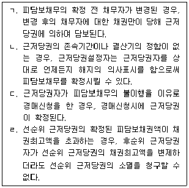
- ㄱ, ㄴ
- ㄴ, ㄷ
- ㄴ, ㄹ
- ㄱ, ㄷ, ㄹ
- ㄱ, ㄴ, ㄷ, ㄹ
(정답률: 알수없음)
39. 가등기담보 등에 관한 법률상 가등기담보에 대한 설명으로 옳은 것은? (다툼이 있으면 판례에 따름)
- 후순위권리자는 청산기간 동안에는 담보목적부동산의 경매를 청구할 수 없다.
- 채무자는 청산기간이 지나기 전이라도 후순위권리자에 대한 통지 후 청산금에 관한 권리를 제3자에게 양도하면 이로써 후순위권리자에게 대항할 수 있다.
- 담보목적물에 대한 사용ㆍ수익권은 채무자에게 지급되어야 할 청산금이 있더라도 그 지급없이 청산기간이 지나면 채권자에게 귀속된다.
- 담보가등기를 마친 부동산이 강제경매를 통해 매각되어도, 담보가등기권리는 피담보채권액 전부를 변제받지 않으면 소멸하지 않는다.
- 담보가등기를 마친 부동산에 대하여 강제경매가 개시된 경우, 담보가등기를 마친 때를 기준으로 담보가등기권리자의 순위가 결정된다.
(정답률: 알수없음)
40. 물권적 청구권에 관한 설명으로 옳지 않은 것은? (다툼이 있으면 판례에 따름)
- 소유권에 기한 물권적 청구권은 소멸시효 대상이 아니다.
- 간접점유자는 제3자의 점유침해에 대하여 물권적 청구권을 행사할 수 있다.
- 토지의 저당권자는 무단점유자에 대해 저당권에 기한 저당물반환청구권을 행사할 수 있다.
- 점유물반환청구권은 점유를 침탈당한 날로부터 1년 내에 행사하여야 한다.
- 점유보조자에게는 점유보호청구권이 인정되지 않는다.
(정답률: 알수없음)
2과목: 경제학원론
41. 소득이 600인 소비자 甲은 X재와 Y재만을 소비하며 효용함수는 U = x+y 이다. PX = 20, PY = 15 이던 두 재화의 가격이 PX = 20, PY = 25 로 변할 때 최적 소비에 관한 설명으로 옳은 것은? (단, x는 X재 소비량, y는 Y재 소비량이다.)
- X재 소비를 30단위 증가시킨다.
- X재 소비를 40 단위 증가시킨다.
- Y재 소비를 30단위 증가시킨다.
- Y재 소비를 40 단위 증가시킨다.
- Y재 소비를 30단위 감소시킨다.
(정답률: 알수없음)
42. 비용에 관한 설명으로 옳은 것을 모두 고른 것은?
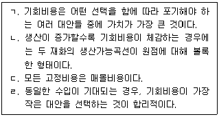
- ㄱ, ㄴ
- ㄱ, ㄹ
- ㄴ, ㄷ
- ㄱ, ㄴ, ㄹ
- ㄴ, ㄷ, ㄹ
(정답률: 알수없음)
43. 다음 중 옳은 것을 모두 고른 것은?
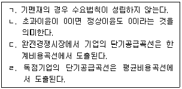
- ㄱ, ㄴ
- ㄱ, ㄷ
- ㄱ, ㄹ
- ㄴ, ㄷ
- ㄴ, ㄹ
(정답률: 알수없음)
44. 완전경쟁시장에서 이윤극대화를 추구하는 기업들의 장기비용함수는 C = 0.5q2+8 로 모두 동일하다. 시장수요함수가 QD = 1000-10P 일 때, 장기균형에서 시장 참여 기업의 수는? (단, C는 개별기업 총비용, q는 개별기업 생산량, QD는 시장 수요량, P는 가격을 나타낸다.)
- 150
- 210
- 240
- 270
- 300
(정답률: 알수없음)
45. 동일한 콥-더글러스(Cobb-Douglas) 효용함수를 갖는 甲과 乙이 X재와 Y재를 소비한다. 다음 조건에 부합하는 설명으로 옳지 않은 것은?
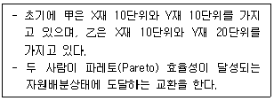
- 교환 후 甲은 X재보다 Y재를 더 많이 소비하게 된다.
- 교환 후 甲은 X재와 Y재를 3 : 5의 비율로 소비하게 된다.
- 교환 후 乙은 X재를 10단위 이상 소비하게 된다.
- 교환 후 두 소비자가 각각 Y재를 15 단위씩 소비하는 경우는 발생하지 않는다.
- 계약곡선(contract curve)은 직선의 형태를 갖는다.
(정답률: 알수없음)
46. 사과수요의 가격탄력성은 1.4, 사과수요의 감귤 가격에 대한 교차탄력성은 0.9, 사과수요의 배 가격에 대한 교차탄력성은 -1.5, 사과수요의 소득탄력성은 1.2이다. 다음 설명 중 옳은 것을 모두 고른 것은? (단, 수요의 가격탄력성은 절대값으로 표시한다.)
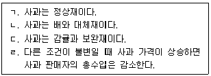
- ㄱ, ㄴ
- ㄱ, ㄷ
- ㄱ, ㄹ
- ㄴ, ㄹ
- ㄷ, ㄹ
(정답률: 알수없음)
47. 주어진 소득으로 X재, Y재 두 재화만을 소비하는 甲의 효용함수가 U = x1/3y2/3일 때, 설명으로 옳지 않은 것은? (단, x는 X재 소비량, y는 Y재 소비량이며, 소득과 두 재화의 가격은 0보다 크다.)
- X재는 정상재이다.
- Y재는 정상재이다.
- 甲의 무차별곡선은 원점에 대해 볼록하다.
- 두 재화의 가격비율에 따라 어느 한 재화만 소비하는 결정이 甲에게 최적이다.
- 두 재화의 가격이 동일하다면 Y재를 X재보다 많이 소비하는 것이 항상 甲에게 최적이다.
(정답률: 알수없음)
48. 영화관 A의 티켓에 대한 수요함수가 Q = 160-2P 일 때, A의 판매수입이 극대화 되는 티켓 가격은? (단, P는 가격, Q는 수량이다.)
- 0
- 10
- 20
- 40
- 80
(정답률: 알수없음)
49. 가격경쟁(price competition)을 하는 두 기업의 한계비용은 각각 0이다. 각 기업의 수요함수가 다음과 같을 때, 베르뜨랑(Bertrand) 균형가격 P1, P2는? (단, Q1은 기업 1의 생산량, Q2는 기업 2의 생산량, P1은 기업 1의 상품가격, P2는 기업 2의 상품가격이고, 기업 1과 기업 2는 차별화된 상품을 생산한다.)
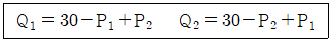
- 20, 20
- 20, 30
- 30, 20
- 30, 30
- 40, 40
(정답률: 알수없음)
50. 어느 마을에 주민들이 염소를 방목할 수 있는 공동의 목초지가 있다. 염소를 방목하여 기를 때 얻는 총수입은 R = 10(20X-X2) 이고, 염소 한 마리에 소요되는 비용은 20이다. 만약 개별 주민들이 아무런 제한 없이 각자 염소를 목초지에 방목하면 마을 주민들은 총 X1마리를, 마을 주민들이 마을 전체의 이윤을 극대화하고자 한다면 총 X2마리를 방목할 것이다. X1과 X2 는? (단, X는 염소의 마리수이다.)
- 12, 9
- 12, 16
- 16, 12
- 18, 9
- 18, 12
(정답률: 알수없음)
51. 노동의 시장수요함수와 시장공급함수가 다음과 같을 때 균형에서 경제적 지대(economic rent)와 전용수입(transfer earnings)은? (단, L은 노동량, w는 임금이다.)
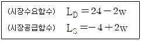
- 0, 70
- 25, 45
- 35, 35
- 45, 25
- 70, 0
(정답률: 알수없음)
52. 다음 ( )안에 들어갈 내용으로 알맞은 것은?
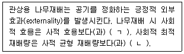
- ㄱ: 크며 ㄴ: 많다
- ㄱ: 크며 ㄴ: 적다
- ㄱ: 작으며 ㄴ: 많다
- ㄱ: 작으며 ㄴ: 적다
- ㄱ: 동일하고 ㄴ: 동일하다
(정답률: 알수없음)
53. 복점(duopoly)시장에서 기업 A와 B는 각각 1, 2, 3의 생산량 결정 전략을 갖고 있다. 성과보수행렬(payoff matrix)이 다음과 같을 때 내쉬균형은? (단, 게임은 일회성이며, 보수행렬 내 괄호 안 왼쪽은 A, 오른쪽은 B의 보수이다.)
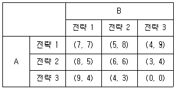
- (7, 7), (6, 6), (0, 0)
- (7, 7), (5, 8), (9, 4)
- (8, 5), (6, 6), (3, 4)
- (9, 4), (5, 8), (0, 0)
- (9, 4), (6, 6), (4, 9)
(정답률: 알수없음)
54. 독점기업의 이윤극대화에 관한 설명으로 옳지 않은 것은? (단, 수요곡선은 우하향하고 생산량은 양(+)이고, 가격차별은 없다.)
- 이윤극대화 가격은 한계비용보다 높다.
- 양(+)의 경제적 이윤을 획득할 수 없는 경우도 있다.
- 현재 생산량에서 한계수입이 한계비용보다 높은 상태라면 이윤극대화를 위하여 가격을 인상하여야 한다.
- 이윤극대화 가격은 독점 균형거래량에서의 평균수입과 같다.
- 이윤극대화는 한계비용과 한계수입이 일치하는 생산수준에서 이루어진다.
(정답률: 알수없음)
55. 온실가스 배출량(Q)을 저감하기 위한 한계저감비용은 40-2Q 이고, 온실가스 배출로 유발되는 한계피해비용은 3Q 이다. 최적의 온실가스 배출량과 한계 저감비용은?
- 8, 24
- 9, 27
- 10, 30
- 11, 33
- 12, 36
(정답률: 알수없음)
56. 사적재화 X재의 개별수요함수가 P = 7-q 인 소비자가 10명이 있고, 개별공급함수가 P = 2+q 인 공급자가 15명 있다. X재 생산의 기술진보 이후 모든 공급자의 단위당 생산비가 1만큼 하락하는 경우, 새로운 시장균형가격 및 시장균형거래량은? (단, P는 가격, q는 수량이다.)
- 3.4, 36
- 3.8, 38
- 4.0, 40
- 4.5, 42
- 5.0, 45
(정답률: 알수없음)
57. X재에 부과되던 물품세가 단위당 t에서 2t로 증가하였다. X재에 대한 수요곡선은 우하향하는 직선이며, 공급곡선은 수평일 때 설명으로 옳은 것은?
- 조세수입이 2배 증가한다.
- 조세수입이 2배보다 더 증가한다.
- 자중손실(deadweight loss)의 크기가 2배 증가한다.
- 자중손실의 크기가 2배보다 더 증가한다.
- 새로운 균형에서 수요의 가격탄력성은 작아진다.
(정답률: 알수없음)
58. 정보의 비대칭성에 관한 설명으로 옳지 않은 것은?
- 사고가 발생할 가능성이 높은 사람일수록 보험에 가입할 가능성이 크다는 것은 역선택(adverse selection)에 해당한다.
- 화재보험 가입자가 화재예방 노력을 게을리 할 가능성이 크다는 것은 도덕적 해이(moral hazard)에 해당한다.
- 통합균형(pooling equilibrium)에서는 서로 다른 선호체계를 갖고 있는 경제주체들이 동일한 전략을 선택한다.
- 선별(screening)은 정보를 보유하지 못한 측이 역선택 문제를 해결하기 위해 사용할 수 있는 방법이다.
- 항공사가 서로 다른 유형의 소비자에게 각각 다른 요금을 부과하는 행위는 신호발송(signaling)에 해당한다.
(정답률: 알수없음)
59. 완전경쟁시장에서 개별 기업의 단기 총비용곡선이
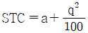
일 때 단기공급곡선 qs는? (단, a는 고정자본비용, q는 수량, p는 가격이다.)- qs = 50p
- qs = 60p
- qs = 200p
- qs = 300p
- qs = 400p
(정답률: 알수없음)
60. X재와 Y재 소비에 대한 乙의 효용함수는 U = 12x+10y 이고, 소득은 1,500이다. X재의 가격이 15일 때 乙은 효용극대화를 위해 X재만 소비한다. 만약 乙이 Y재를 공동구매하는 클럽에 가입하면 Y재를 단위당 10에 구매할 수 있다. 乙이 클럽에 가입하기 위해 지불할 용의가 있는 최대금액은? (단, x는 X재 소비량, y는 Y재 소비량이다.)
- 120
- 200
- 300
- 400
- 600
(정답률: 알수없음)
61. 실업에 관한 설명으로 옳지 않은 것은?
- 일자리를 가지고 있지 않으나 취업할 의사가 없는 사람은 경제활동인구에 포함되지 않는다.
- 실업이란 사람들이 일할 능력과 의사를 가지고 일자리를 찾고 있으나 일자리를 얻지 못한 상태를 말한다.
- 자연실업률은 구조적 실업만이 존재하는 실업률이다.
- 실업자가 구직을 단념하여 비경제활동인구로 전환되면 실업률이 감소한다.
- 경기변동 때문에 발생하는 실업은 경기적(cyclical) 실업이다.
(정답률: 알수없음)
62. 경기변동이론에 관한 설명으로 옳은 것은?
- 실물경기변동이론(real business cycle theory)은 통화량 변동 정책이 장기적으로 실질 국민소득에 영향을 준다고 주장한다.
- 실물경기변동이론은 단기에는 임금이 경직적이라고 전제한다.
- 가격의 비동조성(staggered pricing)이론은 새고전학파(New Classical) 경기변동이론에 포함된다.
- 새케인즈학파(New Keynesian) 경기변동이론은 기술충격과 같은 공급충격이 경기변동의 근본 원인이라고 주장한다.
- 실물경기변동이론에 따르면 불경기에도 가계는 기간별 소비선택의 최적조건에 따라 소비를 결정한다.
(정답률: 알수없음)
63. 고정환율제인 먼델-플레밍 모형에서 해외이자율이 상승할 경우, 자국에 나타나는 경제변화에 관한 설명으로 옳은 것은? (단, 자국은 자본이동이 완전히 자유로운 소규모 개방경제국이다.)
- 환율은 불변이고, 생산량은 감소한다.
- 환율은 불변이고, 무역수지는 증가한다.
- 환율은 불변이고, 국내투자수요가 증가한다.
- 환율에 대한 하락압력으로 통화량이 증가한다.
- 국내이자율이 하락함에 따라 국내투자수요가 증가한다.
(정답률: 알수없음)
64. 기술진보가 없는 솔로우(Solow)의 경제성장모형에서 1인당 생산함수는 y = k0.2, 저축률은 0.4, 자본의 감가상각률은 0.15, 인구증가율은 0.⑤이다. 현재 경제가 균제상태(steady state)일 때 다음 중 옳은 것을 모두 고른 것은? (단, y는 1인당 생산량, k는 1인당 자본량이다.)
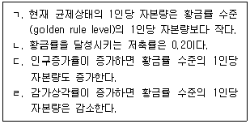
- ㄱ, ㄴ
- ㄱ, ㄷ
- ㄴ, ㄹ
- ㄱ, ㄴ, ㄹ
- ㄴ, ㄷ, ㄹ
(정답률: 알수없음)
65. 모든 시장이 완전경쟁적인 甲국의 총생산함수는 Y = ALαK1-α 이다. 甲국 경제에 관한 설명으로 옳은 것은? (단, Y는 총생산량, L은 노동투입량, K는 자본투입량, A는 총요소생산성이고, A ＞ 0, 0 ＜ α ＜ 1 , 생산물 가격은 1이다.)
- 총생산량이 100이고 α = 0.7 일 때, 자본에 귀속되는 자본소득은 70이다.
- A가 불변이고 α = 0.7 일 때, 노동투입량이 3 % 증가하고 자본투입량이 5 % 증가하면 총생산량은 3 % 증가한다.
- A = 3 일 때 노동과 자본의 투입량이 2 %로 동일하게 증가하면 총생산량은 2 %로 증가한다.
- 노동의 투입량이 5 % 증가할 때 자본의 투입량도 5 % 증가된다면, 노동의 한계생산물은 변한다.
- A가 1 % 증가하고 노동과 자본의 투입량이 모두 동일하게 2 % 증가할 때, α가 0.5보다 크다면 총생산량의 증가율은 5 %이다.
(정답률: 알수없음)
66. 통화량 변동에 관한 설명으로 옳지 않은 것은?
- 법정지급준비율의 변동은 본원통화량을 변화시키지 않는다.
- 중앙은행이 통화안정증권을 발행하여 시장에 매각하면 통화량이 감소한다.
- 중앙은행이 시중은행으로부터 채권을 매입하면 통화량이 감소한다.
- 은행의 법정지급준비율을 100 %로 규제한다면 본원통화량과 통화량은 동일하다.
- 정부의 중앙은행차입이 증가하면 통화량은 증가한다.
(정답률: 알수없음)
67. 효율성 임금(efficiency wage) 이론에 따르면 기업은 노동자에게 균형임금보다 높은 수준의 임금을 지급한다. 옳은 것을 모두 고른 것은?
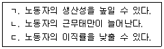
- ㄷ
- ㄱ, ㄴ
- ㄱ, ㄷ
- ㄴ, ㄷ
- ㄱ, ㄴ, ㄷ
(정답률: 알수없음)
68. 신고전학파(Neoclassical) 투자이론에 관한 설명으로 옳지 않은 것은? (단, 모든 단위는 실질 단위이며 자본비용은 자본 한 단위당 비용이다.)
- 자본량이 증가하면 자본의 한계생산물은 감소한다.
- 감가상각률이 증가하면 자본비용도 증가한다.
- 자본량이 균제상태(steady state) 수준에 도달되면 자본의 한계생산물은 자본비용과 일치한다.
- 자본의 한계생산물이 자본비용보다 크다면 기업은 자본량을 증가시킨다.
- 실질이자율이 상승하면 자본비용은 감소한다.
(정답률: 알수없음)
69. 인플레이션에 관한 설명으로 옳지 않은 것은?
- 프리드만(M. Friedman)에 따르면 인플레이션은 언제나 화폐적 현상이다.
- 정부가 화폐공급을 통해 얻게 되는 추가적인 재정수입이 토빈세(Tobin tax)이다.
- 비용상승 인플레이션은 총수요관리를 통한 단기 경기안정화정책을 어렵게 만든다.
- 예상하지 못한 인플레이션은 채권자에서 채무자에게로 소득재분배를 야기한다.
- 인플레이션이 예상되는 경우에도 메뉴비용(menu cost)이 발생할 수 있다.
(정답률: 알수없음)
70. 화폐수요함수는
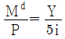
이다. 다음 중 옳은 것을 모두 고른 것은? (단,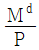
는 실질화폐잔고, i는 명목이자율, Y는 실질생산량, P는 물가이다.)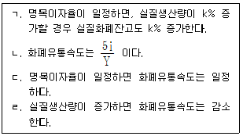
- ㄱ, ㄴ
- ㄱ, ㄷ
- ㄴ, ㄷ
- ㄴ, ㄹ
- ㄷ, ㄹ
(정답률: 알수없음)
71. 다음 폐쇄경제 IS-LM 모형에서 경제는 균형을 이루고 있고, 현재 명목화폐 공급량(M)은 2이다. 중앙은행은 확장적 통화정책을 실시하여 현재보다 균형이자율을 0.5만큼 낮추고, 균형국민소득을 증가시키고자 한다. 이를 위한 명목화폐공급량의 증가분(△M)은? (단, Y는 국민소득, r은 이자율, Md는 명목화폐수요량, P는 물가이고 1로 불변이다.)
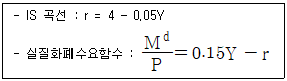
- 0.5
- 2
- 2.5
- 3
- 4
(정답률: 알수없음)
72. 각 나라의 빅맥 가격과 현재 시장환율이 다음 표와 같다. 빅맥 가격을 기준으로 구매력평가설이 성립할 때, 다음 중 자국 통화가 가장 고평가(overvalued)되어 있는 나라는?
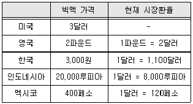
- 미국
- 영국
- 한국
- 인도네시아
- 멕시코
(정답률: 알수없음)
73. 국민소득 항등식을 기초로 하여 경상수지가 개선되는 경우로 옳은 것을 모두 고른 것은?
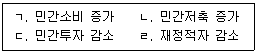
- ㄱ, ㄴ
- ㄴ, ㄷ
- ㄴ, ㄹ
- ㄱ, ㄷ, ㄹ
- ㄴ, ㄷ, ㄹ
(정답률: 알수없음)
74. 소비자물가지수를 구성하는 소비지출 구성이 다음과 같다. 전년도에 비해 올해 식료품비가 10 %, 교육비가 10 %, 주거비가 5 % 상승하였고 나머지 품목에는 변화가 없다면 소비자물가지수 상승률은?
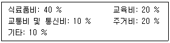
- 5 %
- 7 %
- 9 %
- 10 %
- 12.5 %
(정답률: 알수없음)
75. 필립스(Phillips)곡선에 관한 설명으로 옳은 것은?
- 필립스(A. W. Phillips)는 적응적 기대 가설을 이용하여 최초로 영국의 실업률과 인플레이션 간의 관계가 수직임을 그래프로 보였다.
- 1970년대 석유파동 때 미국의 단기 필립스곡선은 왼쪽으로 이동되었다.
- 단기 총공급곡선이 가파를수록 단기 필립스곡선은 가파른 모양을 가진다.
- 프리드먼(M. Friedman)과 펠프스(E. Phelps)에 따르면 실업률과 인플레이션 간에는 장기 상충(trade-off)관계가 존재한다.
- 자연실업률가설은 장기 필립스곡선이 우상향함을 설명한다.
(정답률: 알수없음)
76. 총수요-총공급 모형의 단기 균형 분석에 관한 설명으로 옳은 것은? (단, 총수요곡선은 우하향하고, 총공급곡선은 우상향한다.)
- 물가수준이 하락하면 총수요곡선이 오른쪽으로 이동하여 총생산은 증가된다.
- 단기적인 경기변동이 총수요충격으로 발생되면 물가수준은 경기역행적(countercyclical)으로 변동한다.
- 정부지출이 증가하면 총공급곡선이 오른쪽으로 이동하여 총생산은 증가한다.
- 에너지가격의 상승과 같은 음(-)의 공급충격은 총공급곡선을 오른쪽으로 이동시켜 총생산은 감소된다.
- 중앙은행이 민간 보유 국채를 대량 매입하면 총수요곡선이 오른쪽으로 이동하여 총생산은 증가한다.
(정답률: 알수없음)
77. 단기 총공급곡선에 관한 설명으로 옳은 것은?
- 케인즈(J. M. Keynes)에 따르면 명목임금이 고정되어 있는 단기에서 물가가 상승하면 고용량이 증가하여 생산량이 증가한다.
- 가격경직성 모형(sticky-price model)에서 물가수준이 기대 물가수준보다 낮다면 생산량은 자연산출량 수준보다 높다.
- 가격경직성 모형은 기업들이 가격수용자라고 전제한다.
- 불완전정보 모형(imperfect information model)은 가격에 대한 불완전한 정보로 인하여 시장은 불균형을 이룬다고 가정한다.
- 불완전정보 모형에서 기대 물가수준이 상승하면 단기 총공급곡선은 오른쪽으로 이동된다.
(정답률: 알수없음)
78. 원/달러 환율의 하락(원화 강세)을 야기하는 요인으로 옳은 것은?
- 재미교포의 국내송금 감소
- 미국인의 국내주식에 대한 투자 증가
- 미국산 수입품에 대한 국내수요 증가
- 미국 기준금리 상승
- 미국인 관광객의 국내 유입 감소로 인한 관광수입 감소
(정답률: 알수없음)
79. 리카디언 등가정리(Ricardian equivalence theorem)가 성립할 경우 옳은 설명을 모두 고른 것은?
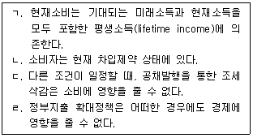
- ㄱ, ㄷ
- ㄱ, ㄹ
- ㄴ, ㄷ
- ㄱ, ㄷ, ㄹ
- ㄴ, ㄷ, ㄹ
(정답률: 알수없음)
80. 폐쇄경제인 A국에서 화폐수량설과 피셔방정식(Fisher equation)이 성립한다. 화폐유통속도가 일정하고, 실질 경제성장률이 2 %, 명목이자율이 5 %, 실질이자율이 3 %인 경우 통화증가율은?
- 1 %
- 2 %
- 3 %
- 4 %
- 5 %
(정답률: 알수없음)
3과목: 부동산학원론
81. 부동산정책의 공적개입 필요성에 관한 설명으로 옳지 않은 것은?
- 정부가 부동산시장에 개입하는 논리에는 부(-)의 외부효과 방지와 공공재 공급 등이 있다.
- 부동산시장은 불완전정보, 공급의 비탄력성으로 인한 수요ㆍ공급 시차로 인하여 시장실패가 나타날 수 있다.
- 정부는 토지를 경제적ㆍ효율적으로 이용하고 공공복리의 증진을 도모하기 위하여 용도지역제를 활용하고 있다.
- 정부는 주민의 편의를 위해 공공재인 도로, 공원 등의 도시계획시설을 공급하고 있다.
- 공공재는 시장기구에 맡겨둘 경우 경합성과 배제성으로 인하여 무임승차(free ride) 현상이 발생할 수 있다.
(정답률: 알수없음)
82. 부동산시장이 과열국면일 경우, 정부가 시행할 수 있는 부동산시장 안정화 대책을 모두 고른 것은?
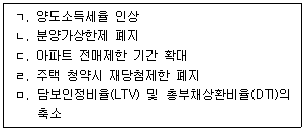
- ㄱ, ㄴ, ㄷ
- ㄱ, ㄷ, ㅁ
- ㄱ, ㄹ, ㅁ
- ㄴ, ㄷ, ㄹ
- ㄴ, ㄹ, ㅁ
(정답률: 알수없음)
83. 부동산정책의 수단을 직접개입과 간접개입으로 구분할 때, 정부의 간접개입수단에 해당하는 것은?
- 공영개발사업
- 토지세제
- 토지수용
- 토지은행제도
- 공공임대주택 공급
(정답률: 알수없음)
84. A금융기관은 원금균등분할상환방식과 원리금균등분할상환방식의 대출을 제공하고 있다. 두 방식에 의해 산정한 첫번째 월불입액의 차액은? (단, 주어진 조건에 한함)
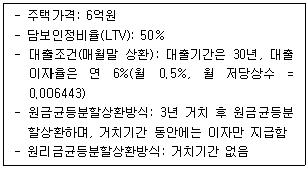
- 332,900원
- 432,900원
- 532,900원
- 632,900원
- 732,900원
(정답률: 알수없음)
85. 주택금융에 관한 설명으로 옳은 것을 모두 고른 것은?
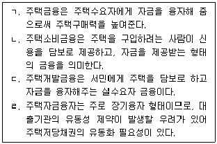
- ㄱ, ㄴ
- ㄱ, ㄷ
- ㄱ, ㄹ
- ㄴ, ㄹ
- ㄷ, ㄹ
(정답률: 알수없음)
86. 프로젝트 파이낸싱(PF)에 의한 부동산개발에 관한 설명으로 옳지 않은 것은?
- PF는 부동산개발로 인해 발생하는 현금흐름을 담보로 개발에 필요한 자금을 조달한다.
- 일반적으로 PF의 자금관리는 부동산 신탁회사가 에스크로우(Escrow) 계정을 관리하면서 사업비의 공정하고 투명한 자금집행을 담당한다.
- 일반적으로 PF의 차입금리는 기업 대출 금리보다 높다.
- PF는 위험분담을 위해 여러 이해관계자가 계약관계에 따라 참여하므로, 일반개발사업에 비해 사업진행이 신속하다.
- PF의 금융구조는 비소구금융이 원칙이나, 제한적소구금융의 경우도 있다.
(정답률: 알수없음)
87. 한국주택금융공사법에 의한 주택담보노후연금에 관한 설명으로 옳지 않은 것은?
- 단독주택, 다세대주택, 오피스텔, 상가주택 등이 연금의 대상주택이 된다.
- 연금 수령 중 담보 주택이 주택재개발, 주택재건축이 되더라도 계약을 유지할 수 있다.
- 연금의 방식에는 주택소유자가 선택하는 일정기간 동안 노후생활자금을 매월 지급받는 방식이 있다.
- 가입자와 그 배우자는 종신거주, 종신지급이 보장되며, 가입자는 보증료를 납부해야 한다.
- 연금의 방식에는 주택소유자가 생존해 있는 동안 노후생활자금을 매월 지급 받는 방식이 있다.
(정답률: 알수없음)
88. 다음 자료에 의한 영업소득세는? (단, 주어진 조건에 한함)
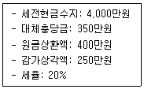
- 820만원
- 900만원
- 1,000만원
- 1,100만원
- 1,200만원
(정답률: 알수없음)
89. 부동산투자 의사결정방법에 관한 설명으로 옳지 않은 것은?
- 수익성지수법은 투자된 현금유출의 현재가치를 이 투자로부터 발생되는 현금유입의 현재가치로 나눈 것이다.
- 회계적이익률법에서는 상호배타적인 투자안일 경우에 목표이익률보다 큰 투자안 중에서 회계적 이익률이 가장 큰 투자안을 선택한다.
- 순현가법은 화폐의 시간가치를 고려한 방법으로 순현가가 “0”보다 작으면 그 투자안을 기각한다.
- 내부수익률은 투자안의 순현가를 “0”으로 만드는 할인율을 의미하며, 투자자 입장에서는 최소한의 요구수익률이기도 하다.
- 회수기간법은 화폐의 시간적 가치를 고려하지 않고, 회수기간이 더 짧은 투자안을 선택하는 투자결정법이다.
(정답률: 알수없음)
90. 부동산투자의 수익률에 관한 설명으로 옳지 않은 것은? (단, 주어진 조건에 한함)
- 기대수익률은 투자한 부동산의 예상수입과 예상지출로 계산되는 수익률이다.
- 실현수익률이란 투자가 이루어지고 난 후에 실제로 달성된 수익률이다.
- 요구수익률은 투자자에게 충족되어야 할 최소한의 수익률이다.
- 장래 기대되는 수익의 흐름이 주어졌을 때, 요구수익률이 클수록 부동산의 가치는 증가한다.
- 투자자의 요구수익률은 체계적위험이 증대됨에 따라 상승한다.
(정답률: 알수없음)
91. A부동산의 1년 동안 예상되는 현금흐름이다. 다음 중 옳은 것은? (단, 주어진 조건에 한함)
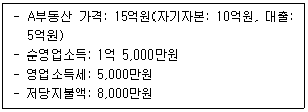
- 부채비율: 20%
- 순소득승수: 15
- 지분투자수익률: 30%
- 부채감당비율: 53%
- 총투자수익률: 10%
(정답률: 알수없음)
92. 부동산투자시 위험과 수익과의 관계에 관한 설명으로 옳은 것을 모두 고른 것은?
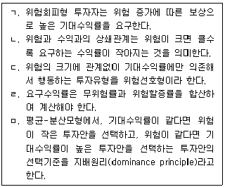
- ㄱ, ㄴ
- ㄴ, ㄷ
- ㄱ, ㄹ, ㅁ
- ㄴ, ㄷ, ㅁ
- ㄷ, ㄹ, ㅁ
(정답률: 알수없음)
93. 시장상황별 수익률의 예상치가 다음과 같은 경우 기대수익률과 분산은?
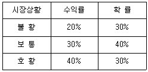
- 기대수익률: 20%, 분산: 0.004
- 기대수익률: 20%, 분산: 0.006
- 기대수익률: 30%, 분산: 0.004
- 기대수익률: 30%, 분산: 0.006
- 기대수익률: 30%, 분산: 0.04
(정답률: 알수없음)
94. 원가법에 의한 대상물건 기준시점의 감가누계액은? (단, 주어진 조건에 한함)
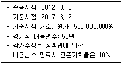
- 35,000,000원
- 40,000,000원
- 45,000,000원
- 50,000,000원
- 55,000,000원
(정답률: 알수없음)
95. 부동산의 개념 등에 관한 설명으로 옳지 않은 것은?
- 부동산이란 토지 및 그 정착물을 말하며, 부동산 이외의 물건은 동산이다.
- 부동산의 복합개념은 부동산을 법률적ㆍ경제적ㆍ기술적인 측면 등으로 이해하고자 하는 것이다.
- 부동산은 20년간 소유의 의사로 평온, 공연하게 점유하고 등기함으로써 그 소유권을 취득한다.
- 동산은 용익물권과 담보물권의 설정이 가능하다.
- 넓은 의미의 부동산에는 등기ㆍ등록의 대상이 되는 항공기ㆍ선박ㆍ자동차 등도 포함된다.
(정답률: 알수없음)
96. 토지의 자연적ㆍ인문적 특성에 관한 설명으로 옳지 않은 것은?
- 부동성(위치의 고정성)으로 인해 외부효과가 발생한다.
- 분할ㆍ합병의 가능성은 용도의 다양성을 지원하는 특성이 있다.
- 용도의 다양성은 토지용도 중에서 최유효이용을 선택할 수 있는 근거가 된다.
- 일반적으로 부증성은 집약적 토지이용과 가격급등 현상을 일으키기도 한다.
- 토지의 인문적 특성 중에서 도시계획의 변경, 공업단지의 지정 등은 위치의 가변성 중 사회적 위치가 변화하는 예이다.
(정답률: 알수없음)
97. 토지의 정착물과 동산에 관한 설명으로 옳지 않은 것은?
- 부동산과 동산은 공시방법을 달리하며, 동산은 공신의 원칙이 인정되나 부동산은 공신의 원칙이 인정되지 않는다.
- 토지의 정착물 중 명인방법을 구비한 수목의 집단은 토지와 독립적인 거래의 객체가 될 수 있다.
- 토지의 정착물 중 도로와 교량 등은 토지와 독립적인 것이 아니라 토지의 일부로 간주된다.
- 제거하여도 건물의 기능 및 효용의 손실이 없는 부착된 물건은 일반적으로 동산으로 취급한다.
- 임차인이 설치한 영업용 선반ㆍ카운터 등 사업이나 생활의 편의를 위해 설치한 정착물은 일반적으로 부동산으로 취급한다.
(정답률: 알수없음)
98. 다음 중 연립주택에 해당하는 것은?
- 주택으로 쓰는 층수가 5개층 이상인 주택
- 주택으로 쓰는 1개 동의 바닥면적 합계가 660제곱미터를 초과하고, 층수가 4개층 이하인 주택
- 학교 또는 공장 등의 학생 또는 종업원 등을 위하여 쓰는 것으로서 1개 동의 공동 취사시설 이용세대가 전체의 50퍼센트 이상인 주택
- 주택으로 쓰는 1개 동의 바닥면적 합계가 660제곱미터 이하이고, 층수가 4개층 이하인 주택
- 주택으로 쓰는 층수가 3개층 이하이고, 1개 동의 주택으로 쓰이는 바닥면적의 합계가 660제곱미터 이하인 주택
(정답률: 알수없음)
99. 부동산 권리분석의 원칙에 해당하지 않는 것은?
- 능률성의 원칙
- 안전성의 원칙
- 탐문주의의 원칙
- 증거주의의 원칙
- 사후확인의 원칙
(정답률: 알수없음)
100. 부동산 권리분석에 관한 내용으로 옳지 않은 것은?
- 부동산의 상태 또는 사실관계, 등기능력 없는 권리 및 등기를 요하지 않는 권리관계 등 자세한 내용에 이르기까지 분석의 대상으로 하는 것이 협의의 권리분석이다.
- 매수인이 대상부동산을 매수하기 전에 소유권이전을 저해하는 조세체납, 계약상 하자 등을 확인하기 위해 공부 등을 조사하는 일도 포함된다.
- 부동산 권리관계를 실질적으로 조사, 확인, 판단하여 일련의 부동산활동을 안전하게 하려는 것이다.
- 대상부동산의 권리에 하자가 없는지 여부를 판단하는 것을 권리분석이라 한다.
- 권리분석 보고서에는 대상부동산 및 의뢰인, 권리분석의 목적, 판단결과의 표시 및 이유, 권리분석의 방법 및 성격, 수집한 자료 목록, 면책사항 등이 포함된다.
(정답률: 알수없음)
101. 수익방식의 직접환원법에 의한 대상부동산의 시산가액은? (단, 주어진 조건에 한함)
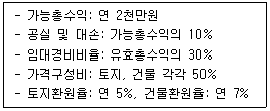
- 190,000,000원
- 200,000,000원
- 210,000,000원
- 220,000,000원
- 230,000,000원
(정답률: 알수없음)
102. 부동산평가활동에서 부동산가격의 원칙에 관한 설명으로 옳지 않은 것은?
- 기여의 원칙이란 부동산가격이 대상부동산의 각 구성요소가 기여하는 정도의 합으로 결정된다는 것을 말한다.
- 최유효이용의 원칙이란 객관적으로 보아 양식과 통상의 이용능력을 지닌 사람이 대상토지를 합법적이고 합리적이며 최고최선의 방법으로 이용하는 것을 말한다.
- 변동의 원칙이란 가치형성요인이 시간의 흐름에 따라 지속적으로 변화함으로써 부동산가격도 변화한다는 것을 말한다.
- 적합의 원칙이란 부동산의 유용성이 최고도로 발휘되기 위해서는 부동산구성요소의 결합에 균형이 있어야 한다는 것을 말한다.
- 예측의 원칙이란 평가활동에서 가치형성요인의 변동추이 또는 동향을 주시해야 한다는 것을 말한다.
(정답률: 알수없음)
103. 감가수정에 관한 설명으로 옳은 것은?
- 치유가능한 감가는 내용년수 항목 중에서 치유로 증가가 예상되는 효용이 치유에 요하는 비용보다 큰 경우의 감가를 의미한다.
- 감가수정의 방법은 직접법과 간접법이 있으며, 직접법에는 내용년수법, 관찰감가법 및 분해법이 있다. 감가수정액의 산정은 이 세가지 방법을 병용하여 산정해야 한다.
- 감가수정은 재조달원가에서 부동산가격에 영향을 미치는 물리적ㆍ기능적ㆍ경제적 감가요인 등을 고려하고, 그에 해당하는 감가수정액을 공제하여, 기준시점 현재 대상물건의 기간손익의 배분을 산정하기 위한 것이다.
- 감정평가대상이 되는 부동산의 상태를 면밀히 관찰한 후 감정평가사의 폭넓은 경험과 지식에 의존하는 것이 분해법이다.
- 감가요인을 물리적ㆍ기능적ㆍ경제적 요인으로 세분하고, 치유가능ㆍ불능항목으로 세분하여 각각의 발생감가의 합계액을 감가수정액으로 하는 방법이 관찰감가법이다.
(정답률: 알수없음)
104. 환원이율에 관한 설명으로 옳지 않은 것은?
- 환원이율은 투하자본에 대한 수익비율로써 상각 후ㆍ세공제전의 이율을 말한다.
- 개별환원이율이란 토지와 건물 각각의 환원이율을 말한다.
- 환원이율이란 대상부동산이 장래 산출할 것으로 기대되는 표준적인 순수익과 부동산 가격의 비율이다.
- 환원이율은 순수익을 자본환원해서 수익가격을 구하는 경우에 적용되며, 이는 결국 부동산의 수익성을 나타낸다.
- 세공제전 환원이율이란 세금으로 인한 수익의 변동을 환원이율에 반영하여 조정(배제)하지 않은 환원이율을 말한다.
(정답률: 알수없음)
1⑤. 감정평가에 관한 규칙의 내용으로 옳지 않은 것은?
- 대상물건에 대한 감정평가액은 시장가치를 기준으로 결정하나, 감정평가 의뢰인이 요청하는 경우 등에는 시장가치 외의 가치를 기준으로 결정할 수 있다.
- 적정한 실거래가는 부동산 거래신고에 관한 법률에 따라 신고된 실제 거래가격으로서 거래 시점이 도시지역은 3년 이내, 그 밖의 지역은 5년 이내인 거래가격 중에서 감정평가업자가 인근지역의 지가수준 등을 고려하여 감정평가의 기준으로 적용하기에 적정하다고 판단하는 거래가격을 말한다.
- 가치형성요인은 대상물건의 경제적 가치에 영향을 미치는 일반요인, 지역요인 및 개별요인 등을 말한다.
- 시장가치는 감정평가의 대상이 되는 토지등(이하 "대상물건")이 통상적인 시장에서 충분한 기간 동안 거래를 위하여 공개된 후 그 대상물건의 내용에 정통한 당사자 사이에 신중하고 자발적인 거래가 있을 경우 성립될 가능성이 가장 높다고 인정되는 대상물건의 가액을 말한다.
- 유사지역은 감정평가의 대상이 된 부동산이 속한 지역으로서 부동산의 이용이 동질적이고 가치형성요인 중 지역요인을 공유하는 지역을 말한다.
(정답률: 알수없음)
106. 감정평가유형에 관한 설명으로 옳지 않은 것은?
- 일괄평가란 2개 이상의 대상물건이 일체로 거래되거나 대상물건 상호간에 용도상 불가분의 관계가 있는 경우에는 일괄하여 평가하는 것을 말한다.
- 조건부평가란 일체로 이용되고 있는 물건의 일부만을 평가하는 것을 말한다.
- 구분평가란 1개의 대상물건이라도 가치를 달리하는 부분은 이를 구분하여 평가하는 것을 말한다.
- 현황평가란 대상물건의 상태, 구조, 이용방법 등을 있는 그대로 평가하는 것을 말한다.
- 참모평가란 대중평가가 아니라 고용주 혹은 고용기관을 위해 하는 평가를 말한다.
(정답률: 알수없음)
107. 부동산개발과 시장 분석에 관한 설명으로 옳지 않은 것은? (단, 주어진 조건에 한함)
- 부동산 개발과정에서 시장분석의 목적은 개발과 관련된 의사결정을 하기 위하여 부동산의 특성상 용도별, 지역별로 각각의 수요와 공급에 미치는 요인들과 수요와 공급의 상호 관계가 개발사업에 어떠한 영향을 미치는가를 조사ㆍ분석하는 것이다.
- 시장성분석은 현재와 미래의 대상 부동산에 대한 수요ㆍ공급 분석을 통해 흡수율 분석과 시장에서 분양될 수 있는 가격, 적정개발 규모 등의 예측을 한다.
- 지역경제분석은 지역의 경제활동, 지역인구와 소득 등 대상지역시장 전체에 대한 총량적 지표를 분석한다.
- 부동산 개발과정의 시장분석은 속성상 지리적ㆍ공간적 범위에 국한되지 않으며, 대상 개발사업의 경쟁력 분석에 한한다.
- 경제성분석은 구체적으로 개발사업의 수익성 여부 등을 평가한다.
(정답률: 알수없음)
108. 부동산시장에 관한 설명으로 옳은 것은?
- 부동산시장은 부동산 재화와 서비스가 교환되는 매커니즘이기 때문에 유형의 부동산 거래는 허용되며, 무형의 이용과 관련한 권리는 제외된다.
- 일반적으로 부동산시장은 일반시장에 비해 거래비용이 많이 들고, 수요자와 공급자의 시장진출입이 제약을 받게 되어 완전경쟁시장이 된다.
- 부동산의 입지성으로 인해 소유자는 해당 부동산의 활용과 가격결정에 있어서 입지 독점권(location monopoly)을 가지며, 이것은 하위시장의 형성과 관련 있다.
- 정부가 제품의 품질이나 규격을 통제하는 건축기준은 양적규제의 예로 들 수 있다.
- 준강성 효율적 시장은 공표된 것이건 그렇지 않은 것이건 어떠한 정보도 이미 가치에 반영되어 있는 시장이다.
(정답률: 알수없음)
109. A와 B도시 사이에 C마을이 있다. 레일리의 소매인력법칙을 적용할 경우, C마을에서 A도시와 B도시로 구매 활동에 유인되는 인구수는? (단, C마을 인구의 60%만 A도시 또는 B도시에서 구매하고, 주어진 조건에 한함)
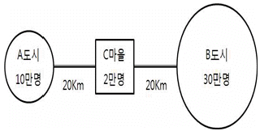
- A: 3천명, B: 9천명
- A: 4천명, B: 8천명
- A: 5천명, B: 7천명
- A: 5천5백명, B: 6천5백명
- A: 6천명, B: 6천명
(정답률: 알수없음)
110. 부동산의 수요와 공급, 균형에 관한 설명으로 옳은 것은? (단, 다른 조건은 동일함)
- 부동산의 수요는 유효수요의 개념이 아니라, 단순히 부동산을 구입하고자 하는 의사만을 의미한다.
- 건축비의 하락 등 생산요소 가격의 하락은 주택공급곡선을 왼쪽으로 이동시킨다.
- 수요자의 소득이 변하여 수요곡선 자체가 이동하는 경우는 수요량의 변화에 해당한다.
- 인구의 증가로 부동산 수요가 증가하는 경우 균형가격은 상승하고, 균형량은 감소한다.
- 기술의 개발로 부동산 공급이 증가하는 경우 수요의 가격탄력성이 작을수록 균형 가격의 하락폭은 커지고, 균형량의 증가폭은 작아진다.
(정답률: 알수없음)
111. 법인인 개업공인중개사가 할 수 있는 업무로 옳지 않은 것은?
- 상업용 건축물 및 주택의 임대관리 등 부동산의 관리대행
- 부동산의 이용ㆍ개발 및 거래에 관한 상담
- 상업용 건축물 및 주택의 개발대행
- 개업공인중개사를 대상으로 한 중개업의 경영기법 및 경영정보의 제공
- 중개의뢰인의 의뢰에 따른 도배ㆍ이사업체의 소개 등 주거이전에 부수되는 용역의 알선
(정답률: 알수없음)
112. 부동산 보유과세와 관련된 내용으로 옳지 않은 것은?
- 종합부동산세는 인별 과세이고 누진세율을 채택하고 있다.
- 토지에 대한 종합부동산세는 종합합산과세대상인 경우에는 국내에 소재하는 해당 과세대상토지의 공시가격을 합한 금액이 3억원을 초과하는 자는 종합부동산세를 납부할 의무가 있다.
- 종합부동산세는 조세부담의 형평성을 제고하고 가격안정을 도모하기 위해 도입되었다.
- 종합부동산세는 주택에 대한 종합부동산세와 토지에 대한 종합부동산세의 세액을 합한 금액을 그 세액으로 한다.
- 종합부동산세의 과세기준일은 재산세의 과세기준일로 한다.
(정답률: 알수없음)
113. 상업용 부동산 시장분석에 관한 설명으로 옳지 않은 것은?
- 소매점포 개설을 위한 시장분석의 절차는 부지평가 → 구역분석 → 시장선택의 3단계로 이루어진다.
- 통계적 분석방법은 기존통계를 분석해서 시장의 지역성을 포착하고, 그 지역성을 기초로 상권의 특성을 추계하는 방법이다.
- 상권추정기법에는 실제조사방법, 2차 자료 이용방법, 통계적 분석방법 등이 있다.
- 수정허프모델에서 고객의 구매확률은 상업지의 매장면적과 상업지로의 도달거리에 의해 결정된다.
- 체크리스트법은 매출액과 비용에 영향을 미칠 것으로 예상되는 다양한 요인들을 나열하고 이를 토대로 전문가적 경험에 의존하여 시장 내 대안부지들을 체계적으로 비교ㆍ평가하는 기법이다.
(정답률: 알수없음)
114. 부동산 조세에 관한 설명으로 옳지 않은 것은?
- 재산세나 종합부동산세는 과세관청이 세액을 산정하여 납세의무자에게 교부하여 징수하는 세금인 반면, 상속세나 양도소득세는 납세의무자가 과세관청에 신고를 통해 납부하는 세금이다.
- 자본이득에 과세하는 양도소득세의 경우 소유자가 자산을 계속 보유함으로써 시장에서 자산거래가 위축되는 동결효과(lock-in effect)가 발생할 수 있다.
- 토지분 재산세의 과세대상 중 공장용지ㆍ전ㆍ답ㆍ과수원ㆍ목장용지와 같이 생산활동에 이용되는 토지는 별도 합산하여 과세한다.
- 취득세의 납세의무자는 사실상 취득자이다.
- 양도소득세의 양도가액은 원칙적으로 그 자산의 양도 당시의 양도자와 양수자 간에 실제로 거래한 가액에 따른다.
(정답률: 알수없음)
115. 부동산마케팅전략에 관한 설명으로 옳지 않은?
- 시장점유마케팅전략에는 STP전략과 4P Mix전략이 있다.
- 시장점유마케팅전략은 AIDA원리로 대표되는 소비자중심의 마케팅전략이다.
- 관계마케팅전략은 생산자와 소비자의 지속적인 관계를 통해서 상호 이익이 되는 장기적인 관점의 마케팅전략이다.
- STP전략 중 시장세분화 전략은 부동산시장을 명확한 여러 개의 구매자 집단으로 나누는 것을 말한다.
- 제품 포지셔닝이란 표적 고객의 마음속에 특정 상품이나 서비스가 자리 잡는 느낌을 말하며, 고객에게 자사의 상품과 서비스 이미지를 자리 잡게 디자인하는 활동을 말한다.
(정답률: 알수없음)
116. 다음은 부동산개발과정에 내재하는 위험에 관한 설명이다. ( )에 들어갈 내용으로 옳게 연결된 것은?
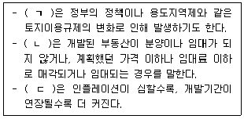
- ㄱ: 법률적 위험, ㄴ: 시장위험, ㄷ: 비용위험
- ㄱ: 법률적 위험, ㄴ: 관리위험, ㄷ: 시장위험
- ㄱ: 사업위험, ㄴ: 계획위험, ㄷ: 비용위험
- ㄱ: 계획위험, ㄴ: 시장위험, ㄷ: 비용위험
- ㄱ: 시장위험, ㄴ: 계획위험, ㄷ: 사업위험
(정답률: 알수없음)
117. 택지개발방식 중 환지방식에 관한 설명으로 옳지 않은 것을 모두 고른 것은?
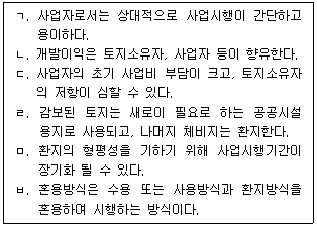
- ㄱ, ㄴ, ㄷ
- ㄱ, ㄷ, ㄹ
- ㄱ, ㄹ, ㅁ
- ㄴ, ㅁ, ㅂ
- ㄹ, ㅁ, ㅂ
(정답률: 알수없음)
118. 부동산개발 과정의 일반적인 절차 중에서 다음에 해당하는 단계는?
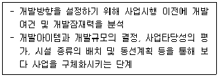
- 구상단계
- 개발전략 수립단계
- 관리 및 마케팅단계
- 예비적 타당성분석단계
- 건설단계
(정답률: 알수없음)
119. 부동산 경기변동과 중개활동에 관한 설명으로 옳지 않은 것은?
- 하향시장의 경우 종전의 거래사례 가격은 새로운 매매활동에 있어 가격 설정의 상한선이 되는 경향이 있다.
- 상향시장에서 매도자는 가격상승을 기대하여 거래의 성립을 미루려는 반면, 매수자는 거래성립을 앞당기려 하는 경향이 있다.
- 중개물건의뢰의 접수와 관련하여 안정기의 경우 공인중개사는 매각의뢰와 매입의뢰의 수집이 다 같이 중요하다.
- 실수요 증가에 의한 공급부족이 발생하는 경우 공인중개사는 매수자를 확보해 두려는 경향을 보인다.
- 일반적으로 부동산경기는 일반경기에 비하여 경기의 변동폭이 큰 경향이 있다.
(정답률: 알수없음)
120. 다음과 같은 조건 하에서 아파트에 대한 수요함수가 QD = -2P+ 6Y + 100 이고, P=5, Y=5인 경우, 수요의 소득탄력성(EY)은? (단, QD: 수요량, P: 가격, Y: 소득이고, 소득탄력성(EY)은 점탄력성을 말하며, 다른 조건은 동일함)
- 1/2
- 1/3
- 1/4
- 1/5
- 1/6
(정답률: 알수없음)
이유는 법원은 관습법의 존부를 알 수 없는 경우를 제외하고 당사자의 주장ㆍ증명이 없어도 관습법을 직권으로 확정하여야 하며, 관습법은 법령과 같은 효력을 가지는 것으로서 법령에 저촉되지 않는 한 법칙으로서의 효력이 있기 때문입니다. 따라서 사회생활규범이 법적으로 인정되면 법적 효력을 가지게 됩니다.